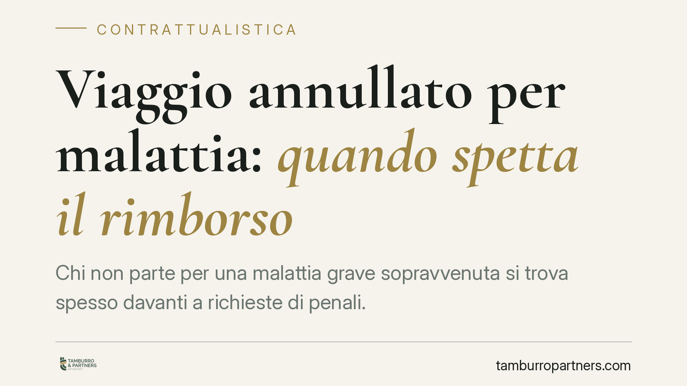

Viaggio annullato per malattia: quando spetta il rimborso
Chi non parte per una malattia grave sopravvenuta si trova spesso davanti a richieste di penali. La giurisprudenza, però, distingue il recesso volontario dall'impossibilità sopravvenuta: in presenza di un impedimento documentato può spettare il rimborso, a prescindere da una polizza di annullamento. Occorre però provarne la gravità. Vediamo i presupposti e gli strumenti concreti.

Il fatto e perché conta
Un viaggiatore acquista un pacchetto turistico. Pochi giorni prima della partenza una malattia grave gli impedisce di partire. L'agenzia o il tour operator trattengono penali rilevanti, talvolta l'intero importo. La domanda ricorrente è semplice: si deve pagare comunque, oppure spetta un rimborso?
La risposta non è univoca, perché dipende dal titolo giuridico su cui si fonda la richiesta. Un conto è recedere liberamente dal contratto (ipotesi che legittima le penali previste); altro è trovarsi di fronte a un impedimento oggettivo e incolpevole che rende impossibile fruire della prestazione.
Inquadramento normativo
Il primo riferimento è l'art. 1463 del Codice civile, in tema di impossibilità sopravvenuta: la parte liberata per impossibilità della prestazione dovuta non può chiedere la controprestazione e deve restituire quanto già ricevuto. Un orientamento giurisprudenziale consolidato applica questo schema anche alla sopravvenuta impossibilità di utilizzare la prestazione turistica, quando l'impedimento del viaggiatore è grave, documentato e non imputabile.
Va però tenuta distinta la disciplina speciale. I pacchetti turistici sono regolati dal Codice del turismo (D.Lgs. 79/2011), attuativo della Direttiva UE 2015/2302. L'art. 41 disciplina il recesso del viaggiatore: come regola, questi può recedere prima della partenza pagando una penale adeguata e giustificabile; senza penale, invece, in presenza di "circostanze inevitabili e straordinarie" verificatesi nel luogo di destinazione (o nelle immediate vicinanze) che incidano in modo sostanziale sul viaggio.
Attenzione a non confondere i due piani. Le "circostanze straordinarie" dell'art. 41 riguardano eventi esterni che colpiscono la destinazione (catastrofi, emergenze sanitarie locali, instabilità), non le condizioni personali del viaggiatore. La malattia individuale è un impedimento soggettivo: è su questo terreno che opera, in via generale, lo schema dell'impossibilità sopravvenuta ex art. 1463 c.c., secondo l'orientamento richiamato.
Implicazioni pratiche
Per chi non parte, la differenza è sostanziale.
Se la rinuncia è una scelta libera, trova applicazione il regime delle penali previste dal contratto e dall'art. 41 del Codice del turismo: si recede, ma a un costo.
Se invece la partenza è impedita da una malattia grave e documentata, l'operazione può essere riqualificata come impossibilità sopravvenuta di fruire della prestazione: in tal caso parte della giurisprudenza riconosce il diritto alla restituzione di quanto versato, al netto di spese effettivamente sostenute e non recuperabili dall'operatore.
Due chiarimenti rilevanti. Primo: l'onere di provare la gravità dell'impedimento grava su chi chiede il rimborso. Non basta un malessere generico; serve una condizione clinica idonea a rendere oggettivamente impossibile o inesigibile la partecipazione al viaggio. Secondo: questo diritto, dove riconosciuto, prescinde dall'esistenza di una polizza di annullamento. La polizza è uno strumento aggiuntivo e facoltativo; la sua assenza non cancella i rimedi di legge, così come la sua presenza può offrire coperture più ampie o procedure più rapide.
Resta inteso che l'esito dipende dalle circostanze concrete, dalla documentazione disponibile e dalla qualificazione del rapporto: non esiste automatismo.
Cosa fare in concreto
- Raccogli subito la documentazione medica. Certificati, referti e prognosi devono attestare la gravità e la riconducibilità temporale dell'impedimento alla data di partenza.
- Comunica tempestivamente e per iscritto. Invia la comunicazione all'operatore e all'agenzia con PEC o raccomandata A/R, prima della partenza ove possibile, conservando prova dell'invio.
- Qualifica correttamente la richiesta. Nella comunicazione invoca espressamente l'impossibilità sopravvenuta ex art. 1463 c.c., chiarendo che non si tratta di recesso volontario soggetto a penale.
- Verifica l'eventuale polizza. Se hai sottoscritto una copertura annullamento, attiva in parallelo la procedura prevista, senza rinunciare ai rimedi di legge.
- Conserva ogni traccia delle spese. Ti servirà per distinguere gli importi effettivamente non recuperabili dall'operatore dal resto del corrispettivo.
Consigliamo di far valutare il caso prima di accettare trattenute o transazioni: la qualificazione giuridica dell'impedimento incide direttamente sull'entità del rimborso ottenibile.
---
Contributo informativo a cura di Tamburro & Partners - Avv. Giuseppe Tamburro. Non costituisce parere legale.
Ogni contratto ha il suo equilibrio.
Se vuoi una revisione delle clausole o una redazione su misura, scrivi allo studio. Ti rispondiamo entro un giorno lavorativo.